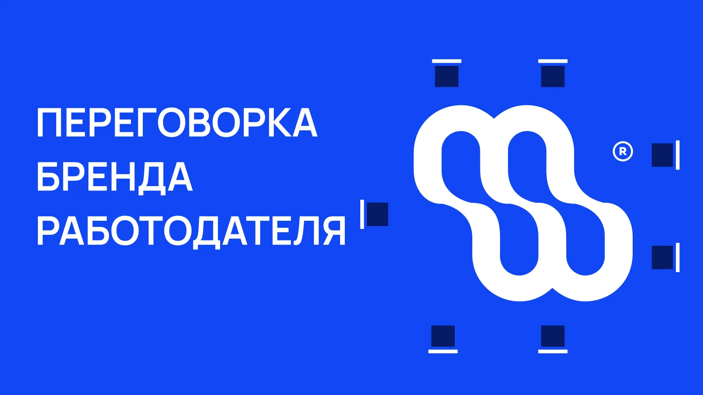
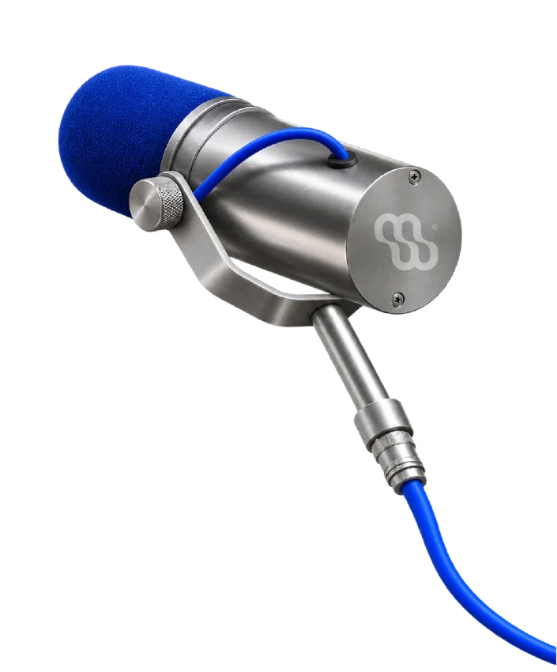

Вас пригласили
в совет директоров
23 января в Москве
Закрытый бизнес-завтрак для избранных Head of DevRel — первый живой разговор с героями нашего подкаста
Принять приглашение →За этим столом
важен ваш взгляд
Мы собираем руководителей DevRel и C-level для разговора о том, как принимаются решения: какие задачи получают поддержку, что становится аргументом для бюджета и по каким критериям оценивают результат.
В «Переговорке» вы сможете задать свои вопросы руководителям C-level IT и бизнеса, сопоставить подходы с коллегами и стать участником стратсессии «Совет директоров».
Услышать логику бизнеса
и проверить свою
Место в совете директоров
На стратсессии вы рассмотрите предложенную стратегию, решите, утвердить её или отклонить, и защитите свою позицию. Посмотрите на аргументы DevRel глазами тех, кому предстоит сказать «да».
Обмен опытом с коллегами
Сопоставьте свои подходы с другими Head of DevRel: как они расставляют приоритеты, оценивают проекты и обсуждают их ценность с бизнесом.
Доступ к первым лицам
Обсудите с CEO, CTO и CPO, чего они ждут от DevRel и какие аргументы учитывают, принимая решение о бюджете.

Принять приглашение →Программа
мероприятия
- 11:30ЗавтракЗнакомимся до начала программы.
- 12:30Открытие и лекцияАлина Саяпова открывает встречу. Руслан Назыров, CEO median.agency: [тема уточняется].
- 13:05Дискуссия «C-level в ИТ: как принимаются решения?»CEO, CTO и CPO из ИТ — о том, как они оценивают DevRel и за что дают бюджет. CTO — Александр Швец, Avito Tech. CEO — уточняется. CPO — уточняется. Модератор — Алина Саяпова, программный директор South HUB, co-founder median.agency.
- 14:15ЛанчПерерыв перед стратсессией.
- 14:45Стратсессия «Совет директоров»На час вы оказываетесь в совете директоров. Решаете, утвердить стратегию или отклонить, и защищаете решение перед всем залом.
- 16:00Свободное общение
Что решите вы?
Принять приглашение →Переговорка
уже в эфире
ON AIRСмотреть →
В нашем подкасте мы уже говорили с HR-директорами и командами DevRel из Яндекса, Т-Банка, X5 и Avito. 23 января мы выключаем камеры и микрофоны. Вы станете первым гостем этого офлайн-формата и получите возможность задать вопросы тем, кого привыкли видеть только на экране.
Кто мы
median.agency — коммуникационное агентство. Развиваем бренд работодателя, выстраиваем связи с командами, кандидатами и IT-сообществами и создаём события и коммуникации, которые работают на цели бизнеса.
делаем события с 2015 года — от форумов в Сочи до road show в 11 городах
гости встречи работают в компаниях рейтинга топ-100 РБК
собираем C-level из IT на South HUB

Локация
Первый домБольшой Гнездниковский пер., 1с2